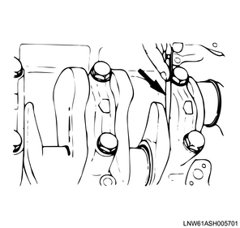
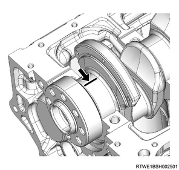
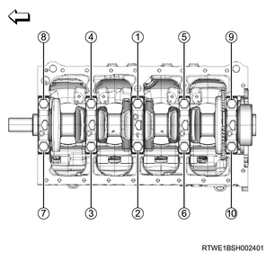
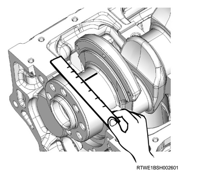
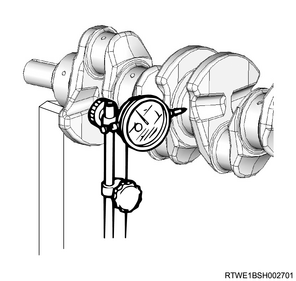
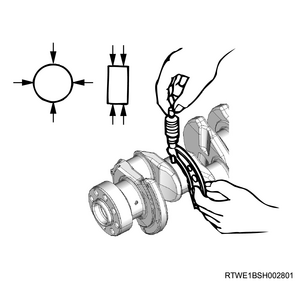
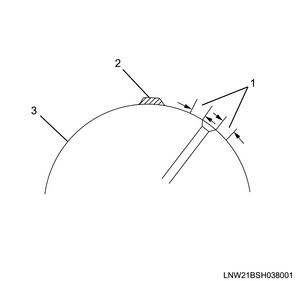

1. Measure the clearance using a feeler gauge.
Note
Standard： 0.040 to 0.201 mm { 0.0016 to 0.0079 in }

Caution
1. Remove the bearing cap from the cylinder block.
2. Remove the lower crankshaft bearing from the bearing cap.
Note
3. Remove the crankshaft from the cylinder block.
4. Remove the upper crankshaft bearing from the cylinder block.
Note
5. Inspect the crankshaft bearing.
Note
6. Install the upper crankshaft bearing to the cylinder block.
7. Install the crankshaft to the cylinder block.
Note
8. Put the PLASTIGAUGE on the crankshaft.
Note

9. Install the lower crankshaft bearing to the bearing cap.
10. Apply the engine oil to the bolt.
Note
11. Install the bearing cap to the cylinder block.
Note
Tightening torque： 166 N・m { 16.9 kgf・m / 122.4 lb・ft }

Caution
12. Remove the bearing cap bolt from the cylinder block.
Note
13. Measure the oil clearance using the PLASTIGAUGE.
Note
Standard： 0.030 to 0.054 mm { 0.0012 to 0.0021 in }

Note
1. Inspect the crankshaft.
Note
1. Put the crankshaft on the V-block.
Note
2. Measure fluctuation using a dial gauge.
Note
Standard： 0.05 mm or less { 0.0020 in or less }

3. Measure outer diameter using the micrometer.
Note
Standard： 69.917 to 69.932 mm { 2.7526 to 2.7532 in } Journal section
Standard： 52.915 to 52.930 mm { 2.0833 to 2.0839 in } Pin

Note
Caution
4. Clean the crankshaft using organic solvent.
Note
5. Prepare inspection solution.
Note
6. Apply inspection solution to the crankshaft.
Note

Caution
Note
Caution